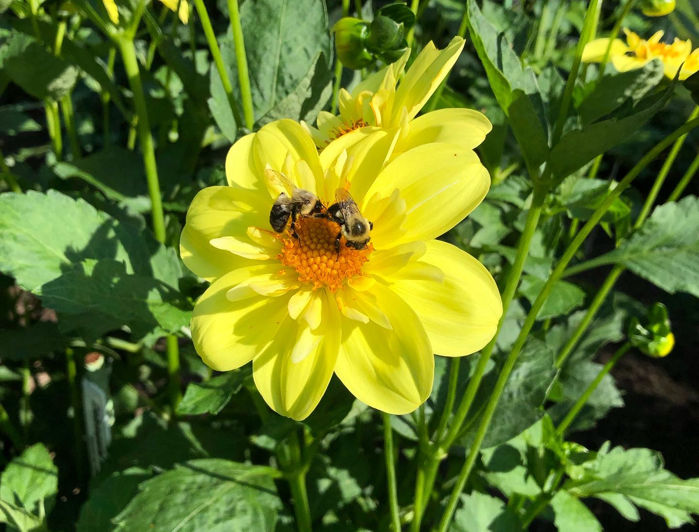
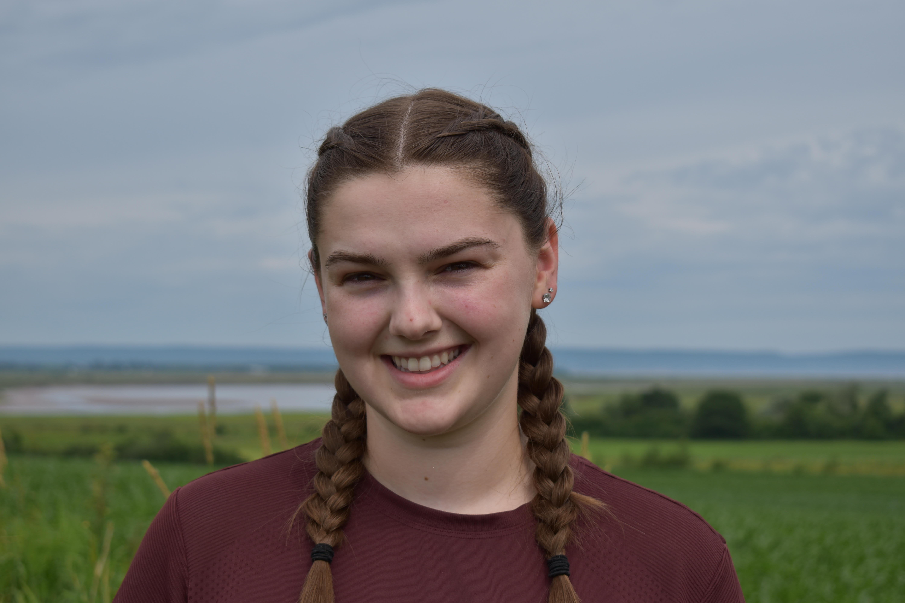
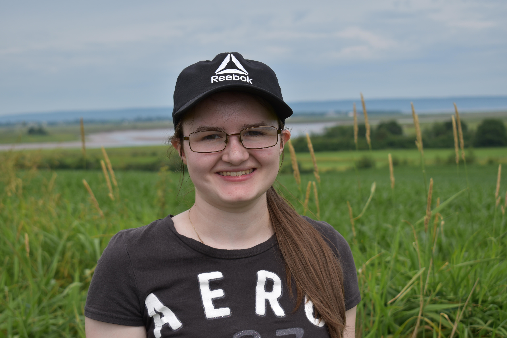
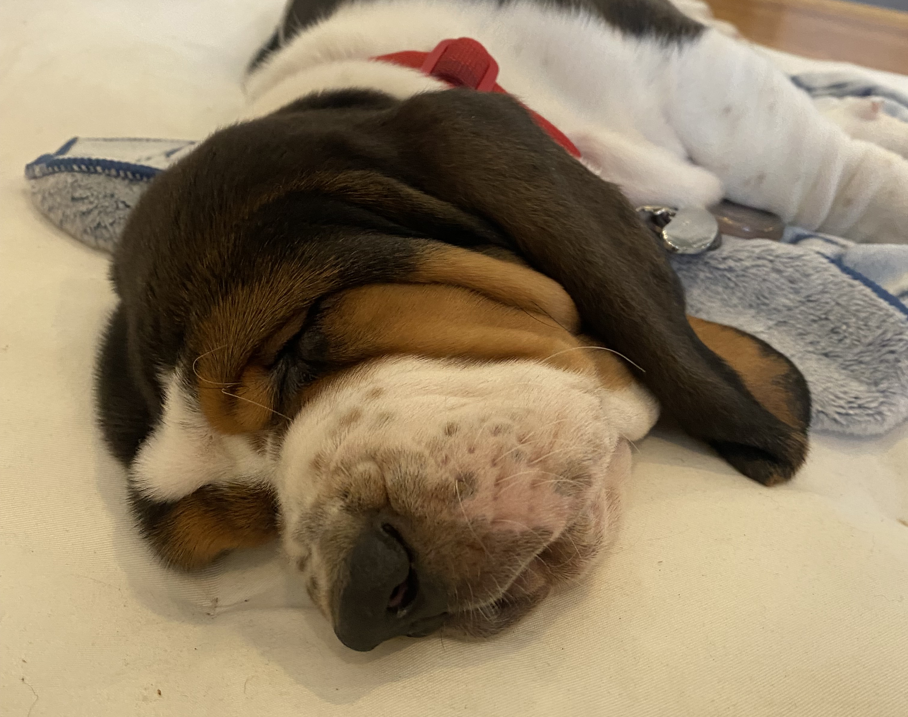

Lab culture
The Willick Lab fosters a supportive environment that prioritizes well-being, celebrates diversity in all its forms, and respects our lives beyond work.
We are committed to producing high-quality, impactful research while upholding the highest ethical standards. As individuals, we value seeking help and openly acknowledging mistakes, recognizing these as essential to growth and learning.
Our goal is to cultivate curiosity and camaraderie. We encourage open dialogue and debate, generously share our expertise, and express gratitude for the time and contributions of others.
Current Team

Ian Willick
Ian Willick (he/him) is a research scientist at Agriculture and Agri-Food Canada. His research combines manipulative experiments to understand how plants tolerate or avoid injury in current and future environments. Much of my work has focused on understanding the mechanisms underpinning how a plant responds to low temperatures, but my long-term goal is to understand in cool climates the interplay between warming and water stress on plant physiology. Ian is also interested in how far and for how long you can stress a plant before the stress is considered lethal. Under these conditions, what is the critical mechanism underlying mortality and what promotes recovery at sub-lethal stresses? Answering these questions provide crucial information on thresholds that must be avoided and provide meaningful traits to target for crop improvement.______________________________________________________________________________________________________________________________________________________

Emma Rand
Emma Rand (she/her) is a plant physiology and remote sensing research technician who joined the lab in 2023. Emma completed her M.Sc. with Dr. Laura Ferguson (Acadia University) characterizing how temperature influences the immune performance of adult and juvenile mosquitoes (Aedes spp., Culex spp.). Previously, Emma completed an honours thesis project under the co-supervision of Dr. Debra Moreau (AAFC Kentville) and Dr. Kirk Hillier (Acadia University) investigating the population dynamics and phenology of grape phylloxera (Daktulospharia vitifoliae). Outside of the lab, Emma enjoys volunteering with 4-H, gardening, and spending time with family.______________________________________________________________________________________________________________________________________________________

Riley Lemieux
Riley Lemieux (he/him) is an M.Sc. student co-supervised by Dr. Zoë Migicovsky (Acadia University), and will join the lab in fall 2025. His research will focus on how under-vine amendments influence ice nucleation activity and freezing injury in grapevines. Previously, Riley graduated with a degree in Biology from Acadia University, where he spent two semesters in the Migicovsky Lab as a research topics student studying the effect of grafting on apple wood anatomy. Outside of the lab, Riley enjoys playing sports, hiking, and running.______________________________________________________________________________________________________________________________________________________

Taylor Cahill
Taylor Cahill (she/her) joined the lab in 2025 as a summer student. As a fourth-year Honours student double-majoring in Biology and Chemistry, Taylor will continue with the lab in Fall 2025 as an honour’s thesis student co-supervised by Dr. Zoë Migicovsky . Her thesis will investigate how foliar and soil silicon amendments enhance strawberry resistance to drought. Previously, Taylor completed a Research Topics course with Dr. Migicovsky at Acadia University, assisting with tendril measurement and grapevine leaf sampling. Outside the lab, she enjoys traveling and baking.
______________________________________________________________________________________________________________________________________________________

Hope Mailman
Hope (she/her) joined the lab in 2025 as a summer student. She is a fourth-year Biology student at Acadia University with interests in botany and mycology. Previously, Hope completed a research topics course under the supervision of Dr. Allison Walker (Acadia University), discovering a new species of fungi belonging to the Umbelopsis genus. Currently, Hope is helping the lab establish the hazelnut test orchard, collecting tissue samples from the vineyards, assessing strawberry fruit quality, and phenotyping oat and barley germplasm for cold hardiness. When Hope is not busy in the lab, she can often be found at the curling rink or ski hill during the winter, or inside curled up with a good book.______________________________________________________________________________________________________________________________________________________

Heinz Willick
Heinz (he/him) is a good boy that joined the group in 2025 to fill the position of lab mascot and holds a chairship in cheer. His motivations include food, sleeping, and contemplating the relative importance of food while sleeping.______________________________________________________________________________________________________________________________________________________
Former members
Aisling O'Neill: CO-OP student at Acadia University (2025). Project: Terpene analysis of Si-treated grapevines.
Mike Jordan: Technician (2024-2025). Fruit quality and chemical analysis of volatiles.
Erin Frankland: Summer student (2023-2024). Research topics student (2024-2025). Project: Using infrared thermography to detect apple maggot in Honeycrisp apples. Co-supervised by Suzie Blatt (AAFC) and Laura Ferguson (Acadia University).
Grace Hennebery-McNeil: Summer student (2023-2024).
Rachel Turner: Summer student (2024).
Natalie Sheiring: Summer student (2022).